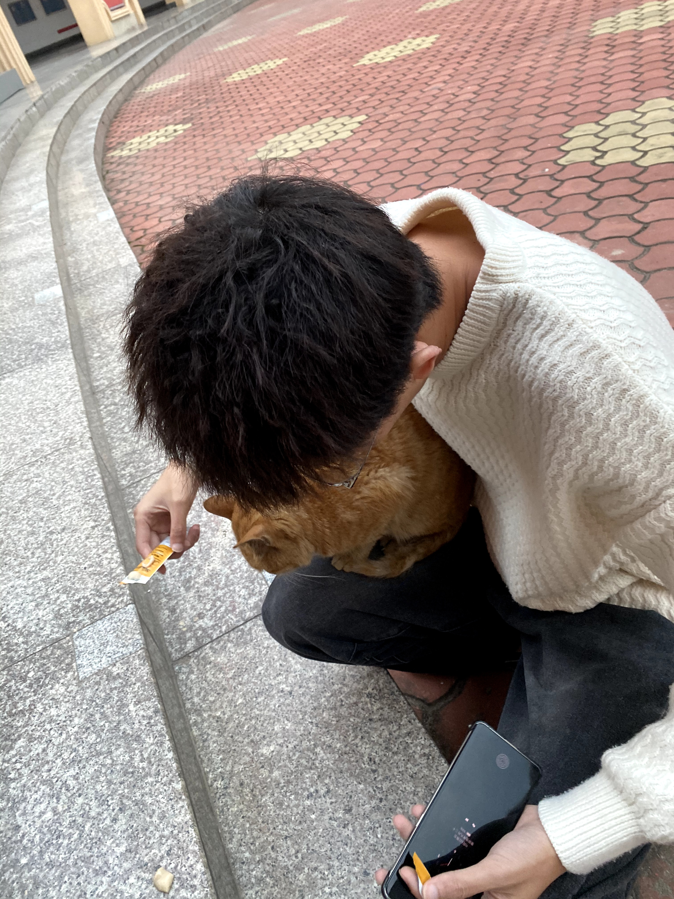

12
11月
2023



那是一个阳光明媚的下午
我坐在图书馆的一个安静角落里，专心致志地学习。突然，我感觉到有什么东西轻轻地碰了碰我的腿。我低头一看，发现是一只毛色饱满，眼神炯炯有神的小猫咪。它用那双湛蓝的眼睛看着我，仿佛在说：“我饿了，你能给我点吃的吗？”
我心里一动，从书包里拿出了我带来的猫条。我蹲下来，小心翼翼地递给小猫。小猫咪似乎很喜欢，它用小爪子轻轻地抓住我的手，然后开始大口大口地吃起来。我看着它满足的样子，心里也感到了一种莫名的快乐。
就这样，我们两个在那个阳光明媚的下午，相互陪伴，相互安慰。我发现，原来学习并不是孤独的，只要有一颗愿意去发现和感受的心，生活中的每一个角落都充满了温暖和惊喜。从那天开始，我每天都会带一些猫条去图书馆，希望能再次遇到那只小猫咪。而那只小猫咪，也成了我学习路上的一份特别的动力。这就是我们的故事，一个关于学习，关于友谊，关于生活的故事。
非特殊说明，本文版权归 ZY个人博客 所有，转载请注明出处.
本文标题： 学校遇见一只小猫咪